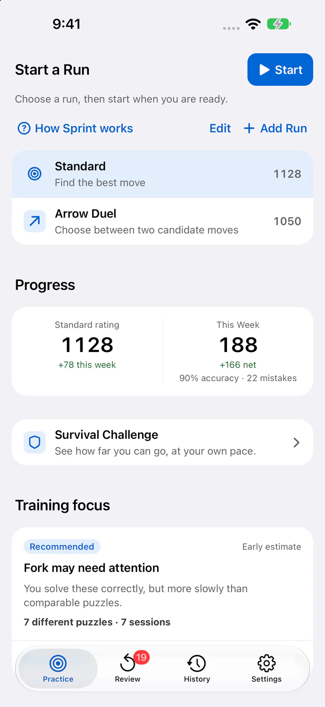
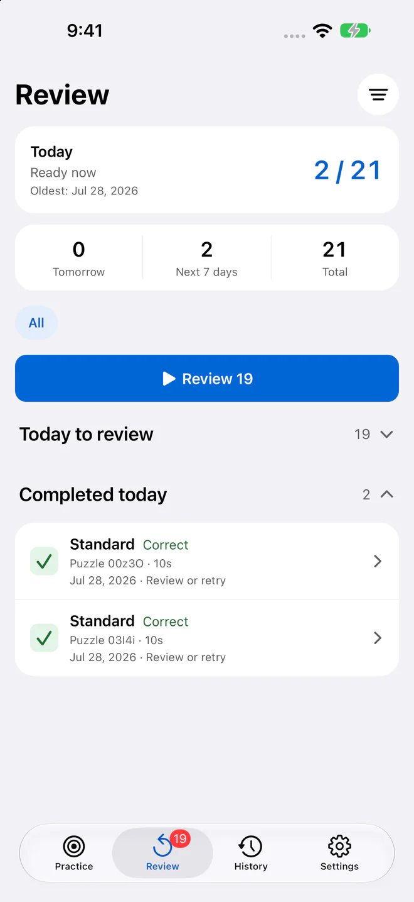

집중 연습을 위한 체스 퍼즐.
레이팅에 맞춘 짧은 퍼즐 스프린트를 풀고, 화살표 대결에서 수를 비교한 뒤 예약 복습으로 놓친 문제를 다시 익히세요.
무료 · 오프라인 · 광고 없음 · 계정 불필요.


예약 복습이 다시 봐야 할 문제를 제때 가져옵니다.
틀리거나 불확실한 문제가 기한에 맞춰 돌아옵니다. 복습 일정을 바꾸지 않고도 언제든 국면을 자유롭게 다시 풀며 수순을 확인할 수 있습니다.

집중 훈련은 초기 추정에서 시작해 직접 선택으로 완성됩니다.
전술 프로필의 초기 추정으로 집중 훈련을 미리 보거나, 원하는 테마·페이스·난이도를 직접 고를 수 있습니다.


체스판에 더 넓은 공간을 주는 프라이빗 연습.
Chessticize는 모바일에서 광고나 계정 없이 오프라인으로 동작합니다. iPhone과 iPad에서는 선택적 개인 iCloud 동기화로 Apple 기기 간 진행 상황을 합칠 수 있으며 언제든 끌 수 있습니다.